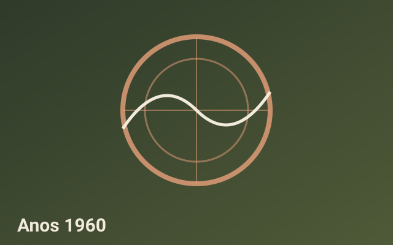
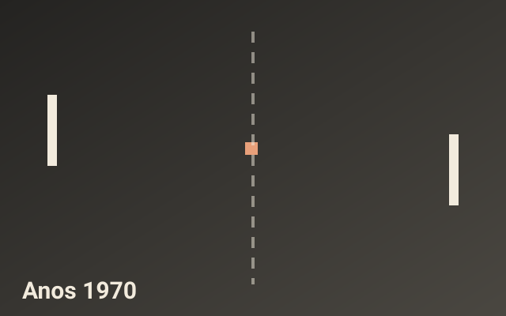
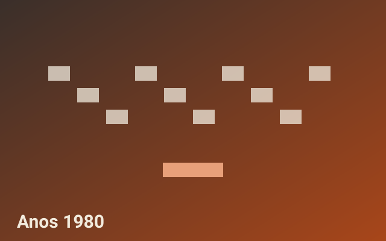
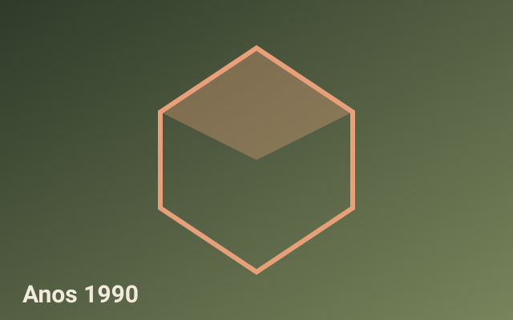
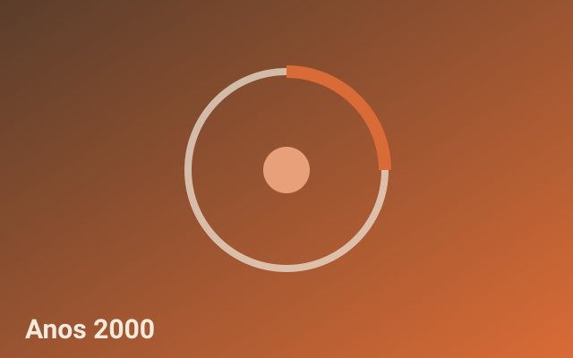
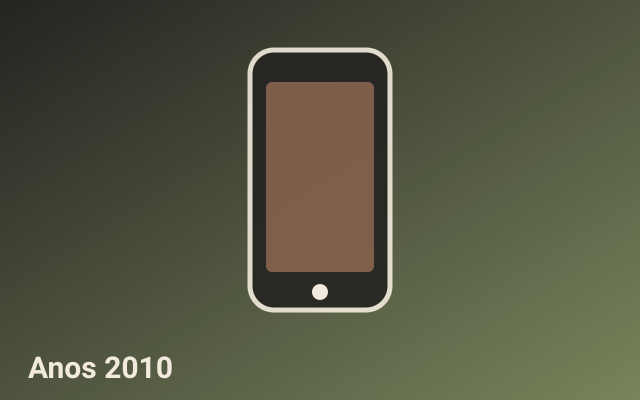
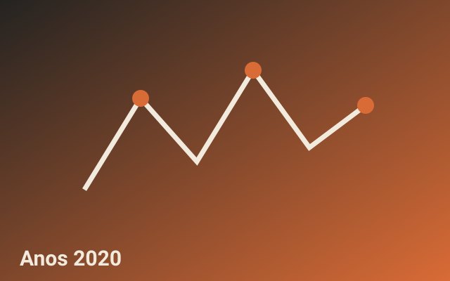

Pong
O jogo de tênis simples da Atari ajudou a criar a indústria dos fliperamas.
Da primeira experiência em laboratório ao mundo digital de hoje, em ordem cronológica.

Antes dos consoles, cientistas e estudantes criaram jogos em equipamentos de laboratório e universidades.

A primeira geração levou o jogo eletrônico para a sala de estar e para os fliperamas.

Em 1983 o mercado norte-americano sofreu uma forte queda. A recuperação veio com a Nintendo e seus personagens.

Os gráficos em três dimensões e as mídias em disco mudaram a forma de criar e vender jogos.

A internet passou a fazer parte da experiência, e os controles por movimento atraíram novos públicos.

Lojas digitais deram espaço a equipes pequenas, enquanto os consoles ganharam novas versões e o formato híbrido.

Mais velocidade de carregamento, jogos em nuvem e serviços de assinatura marcam o período atual.
| Geração | Início (aprox.) | Consoles marcantes | Destaque |
|---|---|---|---|
| 1ª | 1972 | Magnavox Odyssey | Primeiros consoles domésticos |
| 2ª | 1977 | Atari 2600, Intellivision | Cartuchos e jogos de fliperama em casa |
| 3ª | 1983 | Famicom/NES, Master System | Retomada do mercado após a crise |
| 4ª | 1988 | Mega Drive, Super Nintendo | Gráficos de 16 bits |
| 5ª | 1994 | PlayStation, Nintendo 64, Sega Saturn | Chegada do 3D e do CD-ROM |
| 6ª | 1998 | PlayStation 2, Dreamcast, GameCube, Xbox | Jogo online nos consoles |
| 7ª | 2005 | Xbox 360, PlayStation 3, Wii | Alta definição e controles por movimento |
| 8ª | 2012 | PlayStation 4, Xbox One, Wii U, Switch | Lojas digitais e console híbrido |
| 9ª | 2020 | PlayStation 5, Xbox Series X e S | Carregamento rápido e assinaturas |
O jogo de tênis simples da Atari ajudou a criar a indústria dos fliperamas.
Definiu o padrão dos jogos de plataforma e impulsionou o NES.
Criado por Alexey Pajitnov, tornou-se um clássico ao acompanhar o Game Boy em 1989.